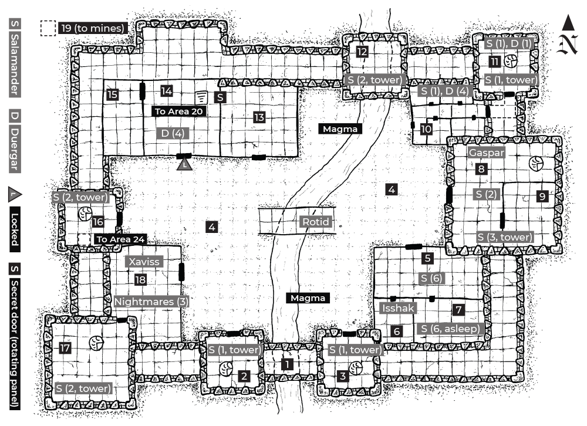

Danger Level. Risky. (2rds)
Light. Dim, orange magma glow.
Random Encounters
| d6 | details |
|---|---|
| 1 | 1d4 salamanders take a duergar slave to prison (Area 10) who they caught sneaking around outside of the mines |
| 2 | Halim (Malik's rakshasa spy) in illusory disguise as a salamander; he's fishing for gossip from another salamander |
| 3 | A spooked nightmare that escaped from the stables (Area 18) crashes toward where the PCs are |
| 4 | 2d4 vicious scorpions burst from the shadows |
| 5 | Gaspar (Area 8) angrily storms toward a nearby building with a retinue of 4 salamanders |
| 6 | A strangler that crept into the fortress follows the PCs and tries to stealthily pick off the rear character |

OTHER INFO
Background.
The efreeti lord Pasha Jefar has twin sons, Malik and Gaspar. Both are as cruel and conniving as their father. By the laws of the Sultan, Jefar must choose one of his firstborn sons to inherit his title. To determine their fate, Jefar has sent them to share the command of the Iron Fortress, a duergar mine on the Material plane. They know their unspoken task: Prove yourself worthy. The Sultan's law prohibits overt murder, so each brother seeks a deniable way to get rid of the other. Both crave to return to the City of Brass in triumph.
Factions.
- Malik the Cunning. Malik is thin as a whip and shrewd as a viper, wielding sorcery that even his tutors in the City of Brass feared to use. He's in charge of the rich mines and forgeworks beneath the Iron Fortress, as well as its duergar slaves, allies who are fanatically loyal to him due to his clever use of enslaving magic. He also has an opportunistic rakshasa ally, Halim, who spies on Gaspar.
- Gaspar the Fierce. Gaspar towers over his brother, wielding his black-bladed scimitar with ferocity. He's in charge of the fortress itself and commands the militant salamanders who defend it. The salamanders have sworn an oath of allegiance to the efreet in exchange for elevated status in society; they're a cut above slaves. They're ruthlessly loyal to those who guarantee their position. Rashik, Gaspar's salamander spy, secretly lurks in the mines.
The Iron Fortress.
The Iron Fortress was a duergar mining stronghold before falling to the efreet. It stands in a cathedral cavern deep inside the Howling Caves (pg. 35). Churning rivers of magma flow through the cave, filling the air with an orange glow and suffocating heat. The fortress is made of dark basalt with thick crenellations of blackened iron.
Features
- Light. Magma fills the entire cavern with a dim, orange glow.
- Walls. 30' high, razor edges (ropes 2:6 tear). Smooth surface is impossible to climb with bare hands.
- Towers. 10' above walls (40' high), razor edges (ropes 2:6 tear).
- Iron ladders (10', removable) connect walkways to towers.
- Iron Crenels. On walls and towers. DISADV to hit covered targets.
- Interior Buildings. Black basalt. Peaked roofs, 20' high at center.
- Magma River. 20' deep. Deals 5d10 damage/rd, death at 0 HP.
Encounters
- Risky. Check for a random encounter every 2 crawling rounds.
- Salamander Guards. The salamanders look out into the cavern (DC 15 DEX to avoid notice from outside walls/DC 12 DEX inside).
- Guard Change. Every two hours. Takes 1d4 rounds. During the rotation, it's easy to avoid notice (DC 9 DEX).
- Guard rotations mean the salamanders change locations every two hours. Roll on the Salamander NPCs list on pg. 63 when you need to determine who is currently nearby. Remove dead NPCs from the list.
- Order of Battle. Each tower has a brass gong for raising the alarm. If raised, the 12 salamanders atop towers (Areas 2, 3, 8, 11, 12, 16, 17) provide longbow cover, and the 13 from Areas 5, 6, and 7 arm and muster in the courtyard (Area 4) in 2 rounds.
- Gaspar. A third of the salamanders go to protect him (Area 8).
- Sweeps. Salamanders atop towers remain in position. The rest sweep the fortress in groups of 3-5 for an hour. Intruders are preferably captured alive and taken before Gaspar.
- Afterwards. Guard numbers double for 24 hours after an alarm is raised. All checks to avoid notice become DC 18.
The Mines.
A pitch-dark webwork of tunnels beneath the Iron Fortress. Duergar slaves hack relentlessly at the sharp rock, pulling out rich veins of iron and gold. The duergar use a vast furnace room to refine the ore, preparing it for its final destination in the City of Brass. The baking heat inside the cramped tunnels is stifling.
Features
- Light. Dim light in rooms with magma. Otherwise, total darkness.
- Tunnels. Flinty, black granite. 10' high unless noted. The constant clangor of mining and forging makes sneaking easy (DEX DC 9).
- Magma. 20' deep. Deals 5d10 damage/rd, death at 0 HP.
Encounters
- Risky. Check for a random encounter every 2 crawling rounds.
- Duergar. They bellow for help if under attack; all duergar in adjacent rooms arrive in 1d4 rounds. They try to capture invaders and bring them before Malik rather than kill them.
- Order of Battle. The duergar don't have an organized defense; they rely on yelling to nearby allies for help. If their morale breaks, they flee toward Malik in Area 21, collecting allies along the way.
- Malik. If alerted, he barricades in Area 22 with any duergar at hand and casts defensive spells on himself. If no threat materializes after an hour, he sends the duergar back to work.
- Afterwards. Malik and duergar are more alert for 24 hours after an incident (DC 15 DEX to escape their notice).
- Duergar Slaves. Most duergar are under the effects of enslave spells Malik regularly refreshes. Repeated brainwashings have given them all a shared, cultish devotion to Malik, even without the magic (DC 15 CHA for an un-enslaved duergar to overcome fanaticism, if given evidence).
- When the PCs encounter unnamed duergar, determine who they are with the Duergar NPCs list on pg. 64. Remove dead duergar.